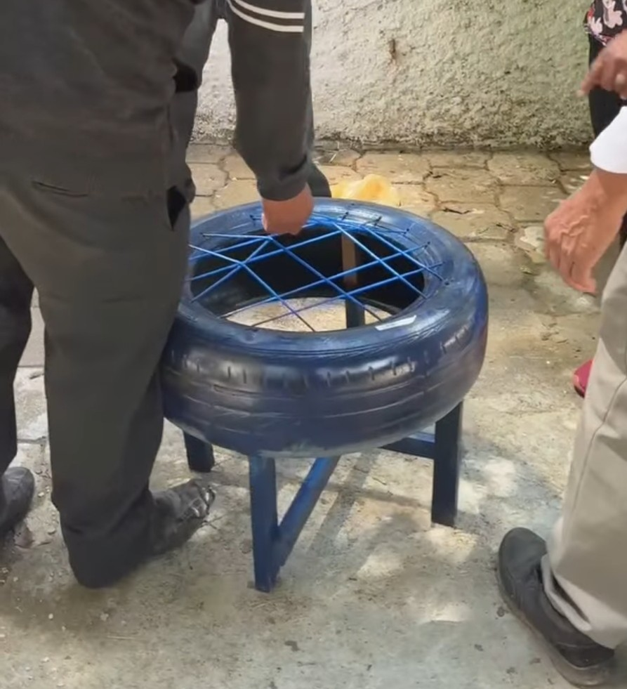
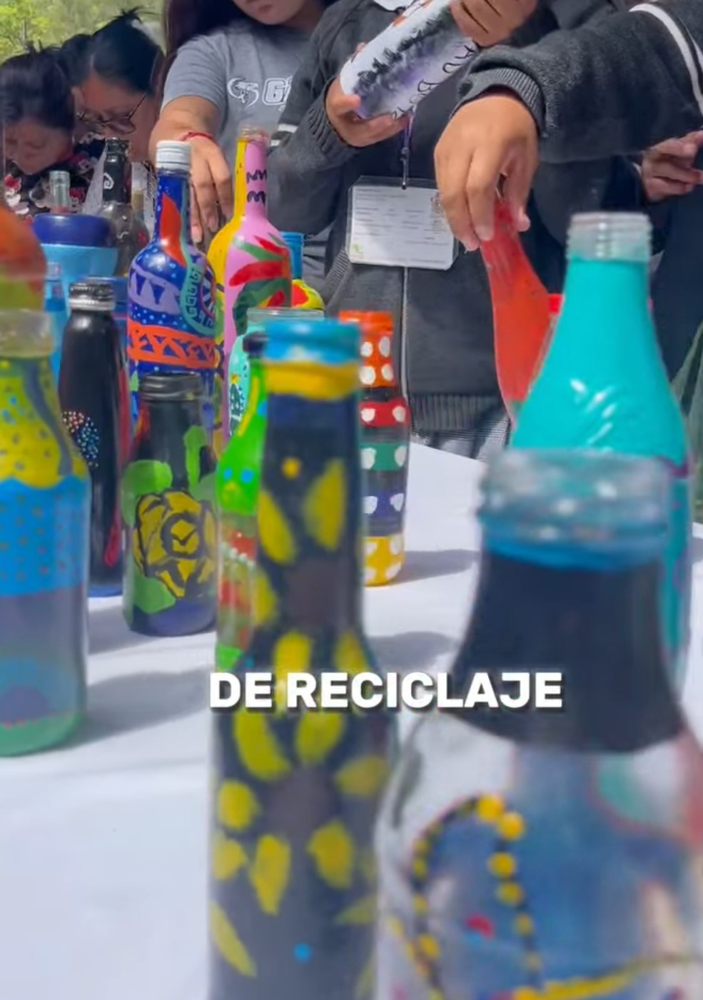
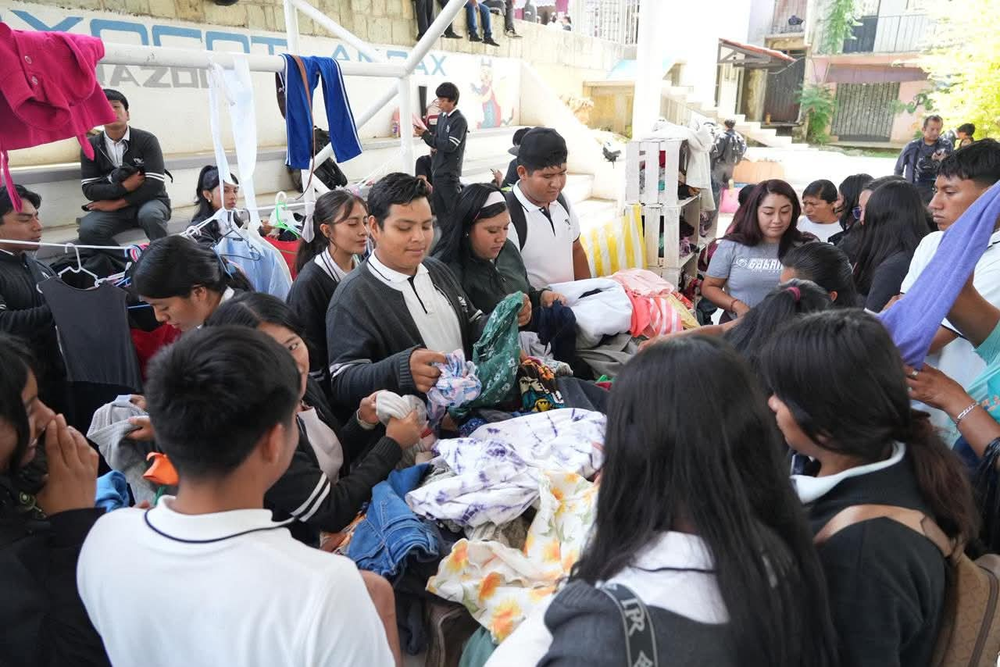
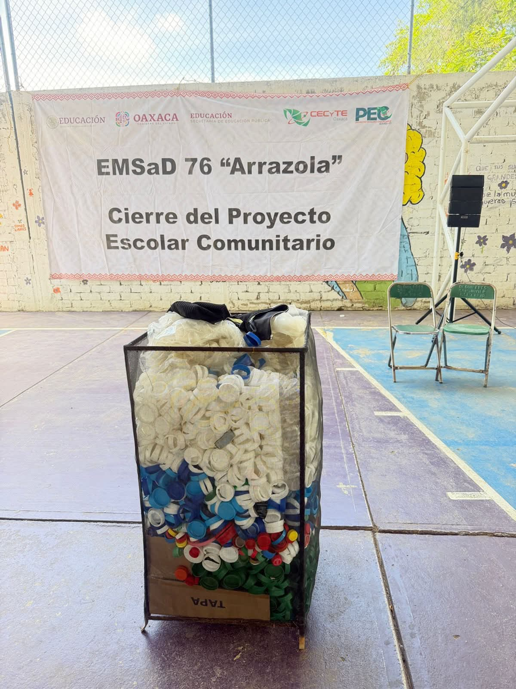

Venta de objetos: "en Vez de dinero pagas con tapitas"
Inspiración delProyecto
El cambio climatico es un problrma hoy en día. En el futuro si no de hace algo sera un problema irrevesible por eso la comunidad estudiantil se sumo para que el evitar la destrucción de nuestro hogar la Tierra
Proceso de creación
Cada grupo hizo algo manual, con cosas que la gente desecha y que pueden tener doble vida como, los sillones con los conos de huevo. La ropa vieja que comunmente se tira, se utilizo para las almuhadas de los sillones, tambien las botellas de cristal se decoraron para que brinde una decoración en el hogar y tenga un doble proposito, las hojas reciclables se realizarón para hacer manualidades como flores y otras cosas más, para decoracion, titeres de ropa vieja. En el cierre del proyecto se hizo venta de ropa que donaron los alumnos, tapetes con corcholatas y otras más.
Mensaje del proyecto
Concietización para contaminar menos y darle una reutilización a cosas que se creen viejas y disminuir la contaminación.



